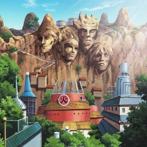

Konoha

Introdução |
Localização |
Multimédia |
Informações |
Home
Informações
Konoha, também conhecida como a Vila Oculta da Folha, é a principal vila da série Naruto. Situada no País do Fogo, Konoha é uma das Cinco Grandes Vilas Ocultas e é conhecida pela sua forte força militar e a proteção oferecida pelos Hokages. Aqui estão alguns dados interessantes sobre Konoha:
- População: Konoha é habitada por milhares de ninjas, cidadãos comuns, e suas famílias.
- Fundação: A vila foi fundada por Hashirama Senju e Madara Uchiha, com o objetivo de trazer paz e estabilidade ao mundo ninja.
- Liderança: Konoha é governada pelo Hokage, o líder mais poderoso da vila. Até agora, houveram sete Hokages, incluindo Naruto Uzumaki, o Sétimo Hokage.
- Clãs Famosos: Konoha abriga diversos clãs ninja renomados, como o clã Uchiha, o clã Hyuuga, o clã Nara, e o clã Aburame.
- Segurança: A vila é protegida por poderosos ninjas e ANBU, uma força de elite especializada em missões secretas.
- Monumentos Famosos: O monumento dos Hokages, esculpido na montanha que circunda Konoha, com os rostos de todos os Hokages.
- Clima: Konoha possui um clima temperado, com florestas densas e rios que atravessam a região, o que oferece abundância de recursos naturais.
- Academia Ninja: Konoha possui uma academia onde jovens aspirantes a ninja são treinados para se tornarem genins e, posteriormente, ninjas de alto nível.
A Vila Oculta da Folha é uma das vilas mais poderosas do mundo ninja, conhecida pela sua lealdade e pelos seus ninjas talentosos, sempre protegida pela linhagem dos Hokages.